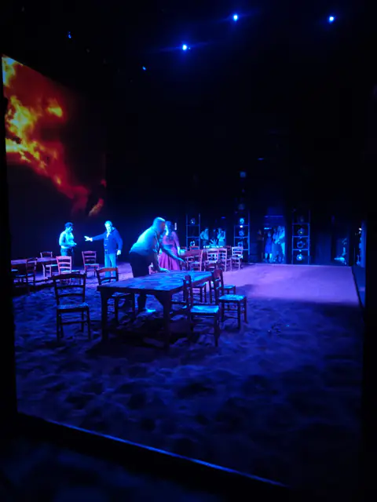
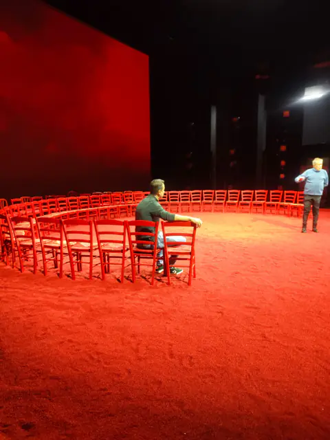
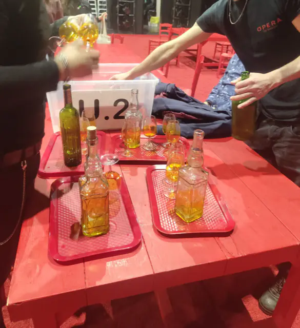
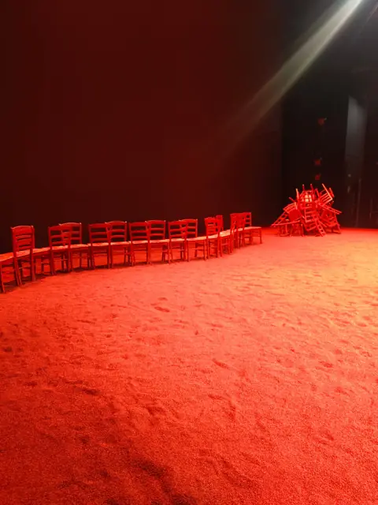
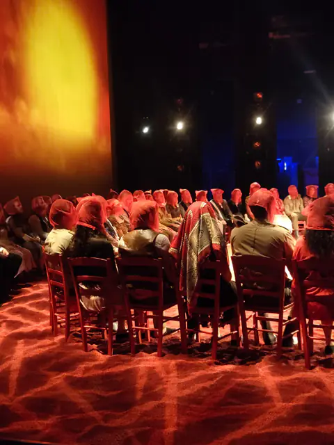
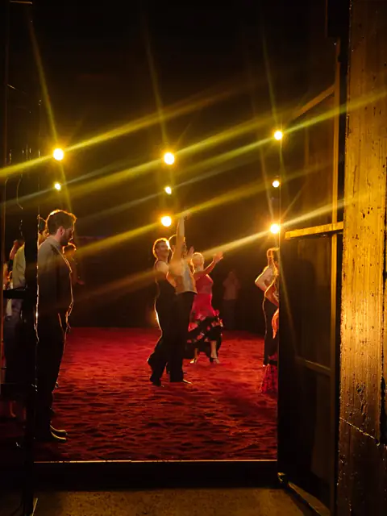
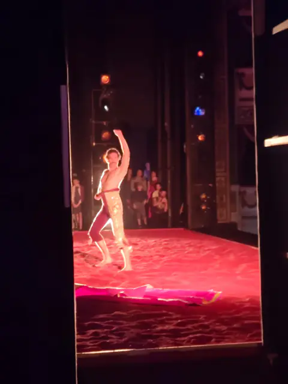
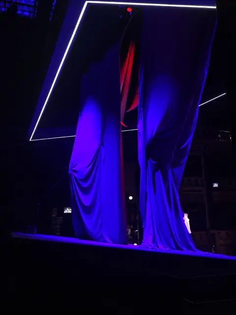

Carmen
Dirigida por Emilio Sagi
Participación en la producción de la ópera Carmen, bajo la dirección de Emilio Sagi. El trabajo se centró en la creación de utilería detallada, texturizado meticuloso y acabados escenográficos que evocan la atmósfera vibrante y dramática de la obra. Cada pieza fue tratada con técnicas artesanales para asegurar su realismo bajo la iluminación teatral.







Rigoletto
Colaboración artística
Colaboración en la escenografía de la ópera Rigoletto. El proyecto requirió la construcción de elementos decorativos de gran escala, combinando técnicas de carpintería y pintura artística para crear ambientes inmersivos que complementan la narrativa oscura y trágica de la obra.
